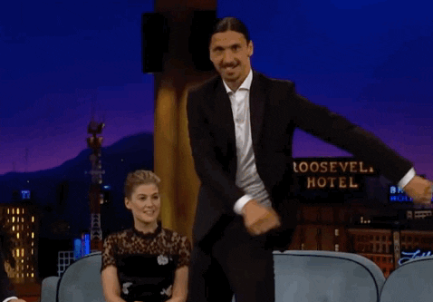
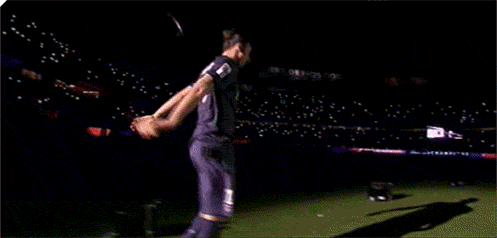
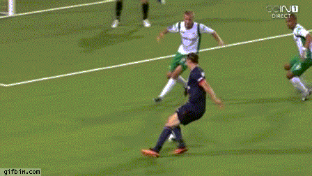
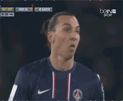

ZLATAN IBRAHIMOVICthe funniest soccer player ever

Zlatan Ibrahimovic shows off floss dance moves on James Corden’s Late Late Show… and can even name all of the Kardashians
LA Galaxy striker was put through his paces in a series of hilarious and bizarre challenges, including trying to say his name with a mouthful of marshmallows and open a jar of pickles.

Firewoks lighted up behind him and make him frustrated when he entered to the field for a festival.

The giant Swedish striker shows a softer side not often seen when he runs out of attacking steam and hugs a Hammarby defender.

Zlatan mocked the referee after he send him outta the game with red card.
"Ibrahimović" redirects here. For the surname, see Ibrahimović (surname).
Zlatan Ibrahimović
Zlatan Ibrahimović June 2018.jpg
Ibrahimović in 2018
Personal information
Full name Zlatan Ibrahimović[1]
Date of birth 3 October 1981 (age 38)[1]
Place of birth Malmö, Sweden
Height 1.95 m (6 ft 5 in)[2]
Playing position(s) Striker
Club information
Current team Milan
Number 11
Youth career
1989–1991 Malmö BI
1991–1995 FBK Balkan
1995–1999 Malmö FF
Senior career*
Years Team Apps (Gls)
1999–2001 Malmö FF 40 (16)
2001–2004 Ajax 74 (35)
2004–2006 Juventus 70 (23)
2006–2009 Internazionale 88 (57)
2009–2011 Barcelona 29 (16)
2010–2011 → Milan (loan) 29 (14)
2011–2012 Milan 32 (28)
2012–2016 Paris Saint-Germain 122 (113)
2016–2018 Manchester United 33 (17)
2018–2019 LA Galaxy 56 (52)
2020– Milan 19 (12)
National team
1999 Sweden U18 4 (1)
2001 Sweden U21 7 (6)
2001–2016 Sweden 116 (62)
* Senior club appearances and goals counted for the domestic league only and correct as of 20:46, 21 September 2020 (UTC)
Zlatan Ibrahimović (Swedish pronunciation: [ˈslǎːtan ɪbraˈhǐːmovɪtɕ]; Bosnian pronunciation: [zlǎtan ibraxǐːmoʋitɕ]; born 3 October 1981) is a Swedish professional footballer who plays as a striker for Serie A club A.C. Milan. Ibrahimović is widely regarded as one of the best strikers of his generation.[3][4][5] He is one of the most decorated active footballers in the world,[note 1] having won 31 trophies in his career.[8] He has scored over 550 career goals, and has scored in each of the last four decades.[9][10]
Ibrahimović began his career at Malmö FF in 1999, and signed for Ajax two years later. At Ajax, Ibrahimović gained a reputation as one of the most promising forwards in Europe, and departed two years later to sign for Juventus. He excelled in Serie A in a strike partnership with David Trezeguet, before joining domestic rivals Inter Milan in 2006, where he won the Capocannoniere (Serie A top scorer) in 2008–09 and won three consecutive Serie A titles. In the summer of 2009, he moved to Barcelona in one of the world's most expensive transfers, before returning to Italy the following season, joining Milan. With them, he won another Serie A title in the 2010–11 season, before joining Paris Saint-Germain in July 2012. During his four-season stay in France, Ibrahimović won a number of trophies including four consecutive Ligue 1 titles, and was the top scorer in Ligue 1 for three seasons. In October 2015, he became PSG's all time leading goalscorer at the time.[11] In 2016, he joined Manchester United on a free transfer and won the FA Community Shield, Football League Cup and UEFA Europa League in his first season. Ibrahimović joined American club LA Galaxy in 2018. Two years later, he rejoined Milan.
Ibrahimović is one of ten players to have made 100 or more appearances for the Swedish national team, over a 15-year international career. He is the country's all-time leading goalscorer with 62 goals. He represented Sweden at the 2002 and 2006 FIFA World Cups, as well as the 2004, 2008, 2012, and 2016 UEFA European Championships. He has been awarded Guldbollen (the Golden Ball), given to the Swedish player of the year, a record 11 times, including 10 consecutive times from 2007 to 2016.[12] Ibrahimović's bicycle kick goal for Sweden against England won the 2013 FIFA Puskás Award.[13]
Ibrahimović was named in the FIFA FIFPro World XI in 2013 and the UEFA Team of the Year in 2007, 2009, 2013 and 2014. He finished at a peak of fourth for the FIFA Ballon d'Or in 2013.[14] In 2015, UEFA ranked him as the best player ever not to have won the UEFA Champions League,[15] while in 2019, FourFourTwo magazine named him the third-greatest player never to win the competition.[16] In December 2014, Swedish newspaper Dagens Nyheter ranked him the second-greatest Swedish sportsperson ever, after tennis player Björn Borg.[17] Off the field, Ibrahimović is known for his brash persona and outspoken comments, in addition to referring to himself in the third person.[18][19]